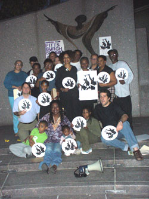

Submitted on Tue, 03/31/2009 - 10:03pm
The University of Ottawa
in Canada is planning to fire Denis Rancourt, physics professor, IWW member, and renowned
researcher, today, March 31, 2009 .
The university claims it is firing Denis because he
announced that all of his students would get A+ grades on the first day of the
physics class so that they could get on with learning, rather than compete and
perform for grades. The university claims this educational approach damages its
reputation and credibility as well as that of its students. In short, grades
equal credibility.
The IWW General Defense Committee Local 6 (GDC Local 6)
rejects this pretext as an exaggeration that does not justify the university’s
repressive approach, which is a threat against academic freedom and education
workers’ rights.
More information about Denis’ case is online at the Academic
Freedom and Governance at the University
of Ottawa weblog http://www.academicfreedom.ca/
Submitted on Sat, 10/27/2007 - 6:34am

CAPTION October 22 organizers gathered at Freedom Corner and launched a new petition demanding police accountability and justice for Jerry Jackson. Download the petition HERE. The petitions will be gathered and a plan to deliver them with maximum impact will be made at the 10th Annual Summit Against Racism, the Saturday after Martin Luther King Day at East Liberty Presbyterian Church.
By
Cynthia Levy | Published 10/25/2007
Group protests police brutality
Submitted on Wed, 10/17/2007 - 11:07pm
 FREE THEM FIGHTERS (pictured, right)—The Pittsburgh Six, from left: Anthony “Platinum Tone” Edwards, Tristyn Trailes, Peppy, Paradise Gray, Ruth Marshall and Bret Grote.
FREE THEM FIGHTERS (pictured, right)—The Pittsburgh Six, from left: Anthony “Platinum Tone” Edwards, Tristyn Trailes, Peppy, Paradise Gray, Ruth Marshall and Bret Grote.
Protest in Jena: The Pittsburgh perspective
By C. Denise Johnson | Published 09/27/2007
The eyes of the nation were fixed on Jena last week as the epicenter of a countrywide protest descended on Jena, La., in protest of the charges leveled against six Black youths accused of attempted murder. While many tuned to radio, TV and Internet coverage of the proceedings, a small cadre of activists made the trek to be part of the demonstration.
Submitted on Sat, 09/29/2007 - 6:51pm
FREE THEM FIGHTERS—The Pittsburgh Six, from left: Anthony “Platinum Tone” Edwards, Tristyn Trailes, Peppy, Paradise Gray, Ruth Marshall and Bret Grote.
ORDERLY CONDUCT—Pamela Lawton, right, with daughter Jasmine discuss her case with Tim Stevens, left, of B-PEP and Kenneth Miller of the Pittsburgh Anti-Sweatshop Community Alliance.
Army recruiters talk with some of the war protesters outside the recruiting station in Oakland yesterday.
These articles all appeared in the last week and are examples of the defense work Pittsburgh Wobblies are doing:
Protest in Jena: The Pittsburgh perspective
By
C. Denise Johnson | Published 09/27/2007
The eyes of the nation were fixed on Jena last week as the epicenter of a countrywide protest descended on Jena, La., in protest of the charges leveled against six Black youths accused of attempted murder. While many tuned to radio, TV and Internet coverage of the proceedings, a small cadre of activists made the trek to be part of the demonstration.
Submitted on Mon, 08/20/2007 - 3:43am

RECENT UPDATES
I.W.W. Victory: Jacky's Galaxy Discontinues Business With Dragonland Trading Inc.
On Thursday August 16, 2007, "Jacky Ko", members of the Industrial Workers of the World and their respective lawyers appeared in Superior Court in Providence. Under oath, Ko stated that he no longer does, nor will he ever again, knowingly do business with Dragonland. Considering Ko stated this under oath, the IWW considers this sufficient evidence of Ko's divestment.
Furthermore, New Buffet restaurant in Providence confirmed that they have also divested in Dragonland. This is a clear and absolute victory for the IWW, union rank and file at Dragonland and Alexandra Svoboda, who was brutalized on the picket line. Alex will undergo her third surgery tomorrow at RI Hopital and will be operated on at least one more time.